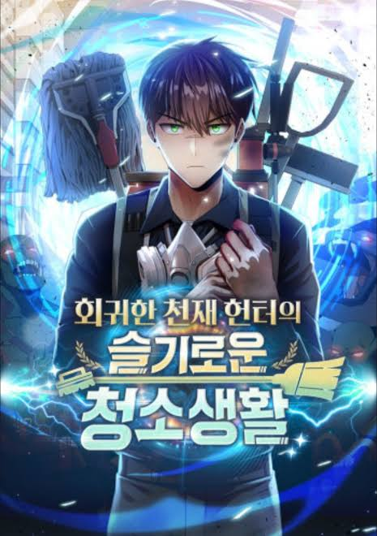
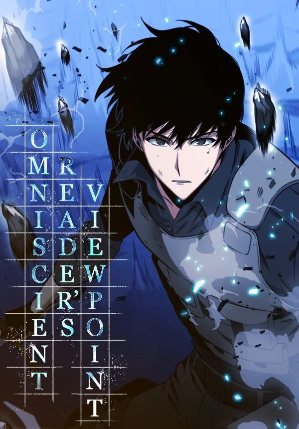

🥇 Murim Login
Tags: Fantasy, Comedy, Transmigration, Murim, Martial Arts, System
Chapter Count: 250 (Ongoing)
Author(s): Zerobic
Artist(s): Jang-Cheol Byuk
An era where hunters thrive on hunting monsters that come from Gates. Jin Tae-Kyung is a low-rank hunter who picks up a VR machine, and accidentally logs into the game, which is set in the world of Martial Arts. After many ups and downs, Tae-Kyung is able to escape this world. The strength and skills, which he received in the Murim were able to be carried over back to the real world. This allows him to continue making a living a hunter… but he decides to return back to the world of Murim, out of care for his NPC friends.
Read at:
WEBTOON
MANGADEX
RATINGS
Story: ⭐⭐⭐⭐⭐
Art: ⭐⭐⭐⭐
Pacing: ⭐⭐⭐⭐⭐
Characters: ⭐⭐⭐⭐⭐
World-Building: ⭐⭐⭐⭐⭐
TOTAL: ⭐⭐⭐⭐⭐

🥈 Clever Cleaning Life of the Returned Genius Hunter
Tags: Fantasy, System, Regression, Dungeon
Chapter Count: 165 (Ongoing)
Author(s): Moonbeat
Artist(s): GoilGoil
World’s first SSS-ranked genius hunter, Junu Kim. He regresses ten years into the past after being ambushed by unknowns one day. With all his hunter skills now locked, he must fulfill his career as a dungeon cleaner to unlock them. But this cleaner… is extraordinary! The once renowned hunter, Junu Kim, takes over the cleaning duty with vigorous determination.
Read at:
WEBTOON
MANGADEX
RATINGS
Story: ⭐⭐⭐⭐⭐
Art: ⭐⭐⭐⭐
Pacing: ⭐⭐⭐⭐⭐
Characters: ⭐⭐⭐⭐⭐
World-Building: ⭐⭐⭐⭐⭐
TOTAL: ⭐⭐⭐⭐⭐

🥉 Omniscient Reader's Viewpopint
Tags: Fantasy, System, Tower
Chapter Count: 311 (On Hiatus)
Author(s): Sing-Shong
Artist(s): 3B2S
Dokja was an average office worker whose sole interest was reading his favorite web novel 'Three Ways to Survive the Apocalypse.' But when the novel suddenly becomes reality, he is the only person who knows how the world will end. Armed with this realization, Dokja uses his understanding to change the course of the story, and the world, as he knows it.
Read at:
WEBTOON
MANGADEX
RATINGS
Story: ⭐⭐⭐⭐⭐
Art: ⭐⭐⭐⭐⭐
Pacing: ⭐⭐⭐⭐⭐
Characters: ⭐⭐⭐⭐
World-Building: ⭐⭐⭐⭐⭐
TOTAL: ⭐⭐⭐⭐⭐